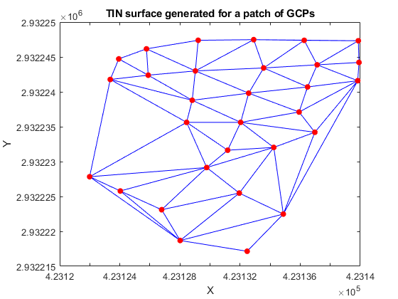

clear all
clc
flight_data = csvread('VVA_h5_flightdata.csv');
flight_X = flight_data(:, 1);
flight_Y = flight_data(:, 2);
flight_Z = flight_data(:, 3);
GCP_data = csvread('VVA_h5.csv');
GCP_X = GCP_data(:, 3);
GCP_Y = GCP_data(:, 2);
GCP_Z = GCP_data(:, 4);
DT = delaunayTriangulation(GCP_X, GCP_Y);
triangles = DT.ConnectivityList;
num_triangles = size(triangles, 1);
distances = zeros(size(flight_data, 1), 1);
for i = 1:size(flight_data, 1)
x = flight_X(i);
y = flight_Y(i);
z = flight_Z(i);
min_distance = Inf;
for j = 1:num_triangles
v1 = [GCP_X(triangles(j, 1)), GCP_Y(triangles(j, 1)), GCP_Z(triangles(j, 1))];
v2 = [GCP_X(triangles(j, 2)), GCP_Y(triangles(j, 2)), GCP_Z(triangles(j, 2))];
v3 = [GCP_X(triangles(j, 3)), GCP_Y(triangles(j, 3)), GCP_Z(triangles(j, 3))];
[A, B, C, D] = plane_equation(v1, v2, v3);
distance = abs(A * x + B * y + C * z + D) / sqrt(A^2 + B^2 + C^2);
min_distance = min(min_distance, distance);
end
distances(i) = min_distance;
end
RMSE = sqrt(mean(distances.^2));
MAE = mean(abs(distances));
acc = 1.96 * RMSE;
fprintf('RMSE: %.2f metres\n', RMSE);
fprintf('Vertical Accuracy: %.2f metres \n', acc);
triplot(DT);
xlabel('X');
ylabel('Y');
zlabel('Z');
title('TIN surface generated for a patch of GCPs');
hold on;
scatter3(GCP_X, GCP_Y, GCP_Z, 'filled', 'MarkerFaceColor', 'r');
hold off;
function [A, B, C, D] = plane_equation(p1, p2, p3)
v1 = p2 - p1;
v2 = p3 - p1;
normal = cross(v1, v2);
normal = normal / norm(normal);
A = normal(1);
B = normal(2);
C = normal(3);
D = -dot(normal, p1);
end
RMSE: 0.59 metres
Vertical Accuracy: 1.17 metres
